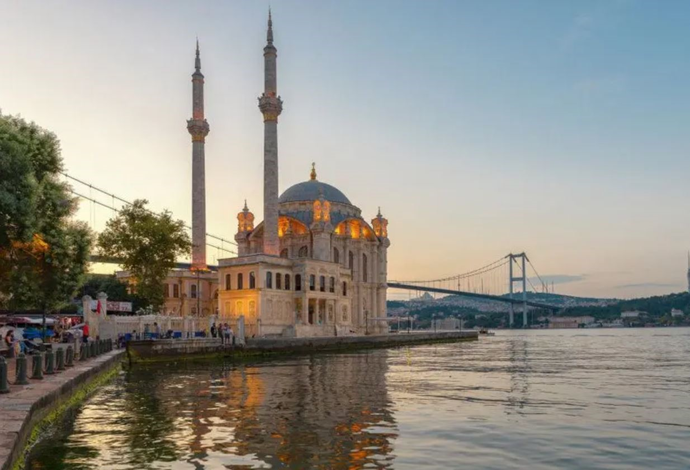

Ortaköy Camii
Ortaköy Camii Hakkında
Ortaköy Camii Hakkında
Büyük Mecidiye Camii ya da halk arasında bilinen adı ile Ortaköy Camii, İstanbul Boğaziçi’nde Beşiktaş ilçesinin, Ortaköy semtinde sahilde bulunan Neo Barok tarzında bir camiidir.
Cami, Sultan Abdülmecid tarafından Ermeni asıllı Mimar Nigoğos Balyan’a 1853 yılında yaptırılmıştır. Oldukça zarif bir yapı olan cami Barok üslubundadır. Boğaziçi’nde eşsiz bir konuma yerleştirilmiştir. Bütün selatin camilerinde olduğu gibi harim ve hünkar bölümü olmak üzere iki kısımdan oluşur. Geniş ve yüksek pencereler Boğaz’ın değişken ışıklarını caminin içine taşıyacak biçimde düzenlenmiştir.
Merdivenle çıkılan yapının tek şerefeli iki minaresi vardır. Duvarları beyaz kesme taştan yapılmıştır. Tek kubbenin duvarları pembe mozaiktendir. Mihrap mozaik ve mermerden, minber ise somaki kaplı mermerden yapılmıştır ve ince bir işçiliğin ürünüdür.
Statik açıdan oldukça narin olan yapı 1862’de ve 1866’da onarılmış, 1894 depreminde büyük zarar görünce 1909’da Evkaf Nezâreti’nce yeniden tamir edilmiştir. Bu tamirde yıkılan eski yivli minareler yivsiz olarak yapılmış, minarelerin petek ve külâh kısımlarıyla yapının çeşitli bölümleri yenilenmiştir. 1960’larda binada yeniden çatlamaların oluşması sebebiyle Vakıflar Genel Müdürlüğü’nün başlattığı restorasyon çalışmalarında zemin takviye edilmiş, kubbe yenilenmiştir. Bu onarımda ibadete kapatılan cami 1969’da yeniden açılmıştır. 1984’te büyük bir yangın sonucu kısmen harap olan bina tekrar restore edilmiştir.[1]
Vakıflar Genel Müdürlüğü tarafından 2011 ile 2014 arasında yaklaşık üç yıl süren restorasyon çalışmaları 06 Haziran 2014 tarihinde tamamlanmış ve cami zamanın başbakanı şu anki cumhurbaşkanı Recep Tayyip Erdoğan'ın katıldığı tören ile yeniden ibadet ve ziyarete açılmıştır.